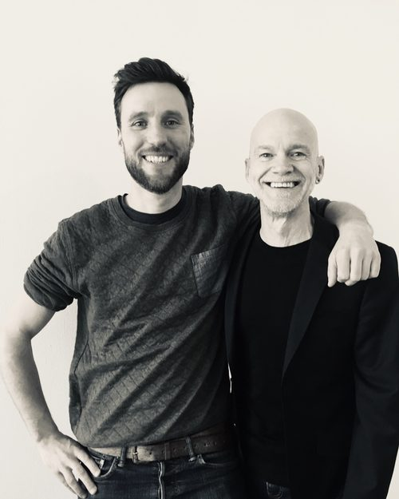
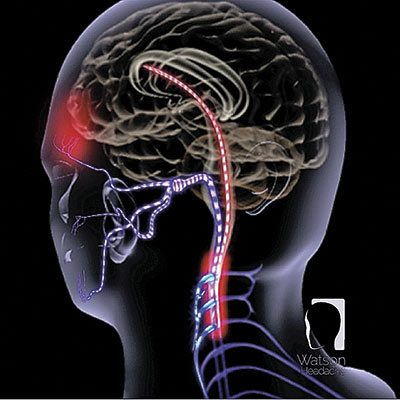

Watson Headache Methode
Dr. Dean Watson PhD. (Adelaide – Australië), fysiotherapeut/ manueel therapeut en internationaal erkend hoofdpijnspecialist, doet al zijn hele werkende leven onderzoek naar migraine en hoofdpijn. Hij heeft een specifieke behandelmethode ontwikkeld voor de behandeling van hoofdpijn, spanningshoofdpijn, migraine en zelfs clusterhoofdpijn die inmiddels in 25 landen wereldwijd succesvol wordt gepraktiseerd. Het wordt beschouwd als dé meest optimale behandelmethode voor spanningshoofdpijn en migraine.

Zijn methode gaat uit van een gesensitiseerde, ofwel overprikkelde hersenstam als oorzaak voor het ontstaan van hoofdpijn en migraine. Deze chronische overprikkeling van de hersenstam wordt veroorzaakt vanuit de 3 bovenste nekwervels.
De hersenstam (de trigemino cervicale nucleus) is het gedeelte in de hersenen dat informatie ontvangt vanuit onder andere nek, hoofd, gezicht, kaak en bloedvaten in het brein en geeft deze door aan de grote hersenen (de cortex).
Indien de hersenstam gesensitiseerd is, wordt reguliere en “normale” informatie als het ware opgeblazen doorgegeven. Als deze opgeblazen informatie de cortex bereikt, wordt dit geïnterpreteerd als gevaar en zal de cortex als reactie een beschermmechanisme activeren → namelijk alarm slaan en pijn produceren, in dit geval hoofdpijn of migraine.
Bekijk de hersenstam als een te scherp afgesteld alarmsysteem of een luidspreker met het volume te hoog opgedraaid.
Meestal goed werkende migraine medicatie zoals Triptanen, misschien bij u bekend als Sumatriptan of Rizatriptan, hebben eveneens als doel de hersenstam te desensitiseren. Helaas is dit effect vaak maar tijdelijk.

Hoe kan ik u helpen?
Behandeling middels de Watson Headache® Approach, een niet-manipulerende en niet-krakende methode met als doel de bewegingsfunctie van de 3 bovenste nekwervels te normaliseren en de spierspanning van de kleine nekspieren te reduceren. Hiermee wordt de overprikkeling (sensitisatie) van de hersenstam tegen gegaan. Als deze overprikkeling van de hersenstam vanuit de hoge nekwervels verdwijnt, dan verdwijnt ook de migraine. Uw migraine wordt ook niet langer getriggerd door stress, vermoeidheid, houding (zittend achter de computer) of voedingsstoffen (chocola, rode wijn).
Behandeling van de hoog cervicale wervelkolom middels de Watson Headache® Approach heeft wetenschappelijk aangetoond dat het een desensitisatie van de hersenstam tot gevolg heeft en de oorzaak van uw hoofdpijn of migraine aanpakt. Tijdelijke reproductie (opwekken) van de herkenbare hoofdpijn heeft desensitisatie van de hersenstam als effect. Precies hetzelfde effect als triptanen (medicijnen) hebben op uw hoofdpijn/migraine, maar dan geen tijdelijke maar een permanente oplossing voor uw hoofdpijn/migraine klachten.
Voor meer informatie verwijzen wij u naar de website van Dean Watson: www.watsonheadache.com (let op: de site is in het Engels)